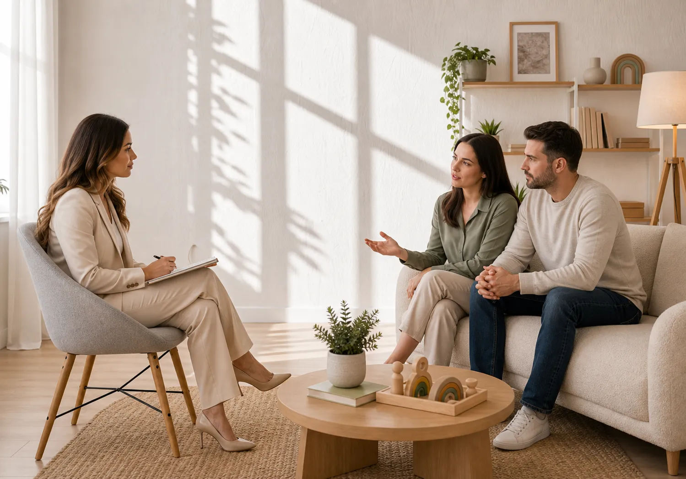

Misyonum
Çocukların duygusal, davranışsal ve gelişimsel ihtiyaçlarını anlamayı, ailelere bu yolculukta rehberlik etmeyi amaçlıyorum.
- Bütüncül YaklaşımÇocuğun duygusal, davranışsal, sosyal ve gelişimsel süreçlerini birlikte değerlendirerek kapsamlı bir destek sunuyorum.
- Aileyle İş BirliğiDestek sürecini yalnızca çocukla değil, aileyle kurulan güvenli iş birliğiyle şekillendiriyorum.